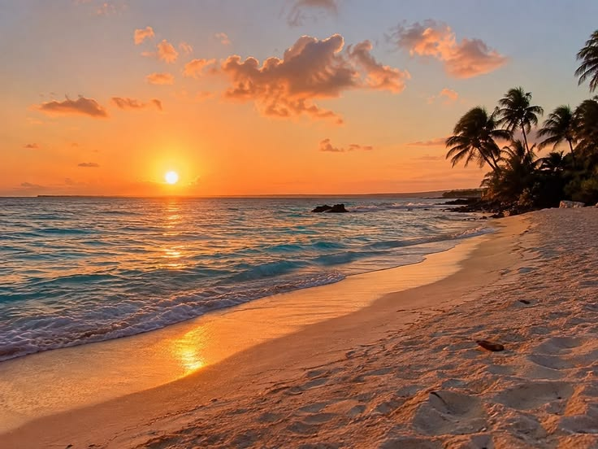
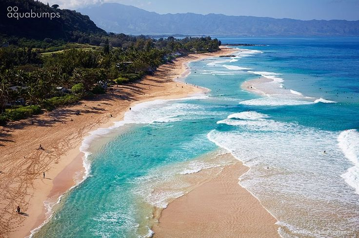
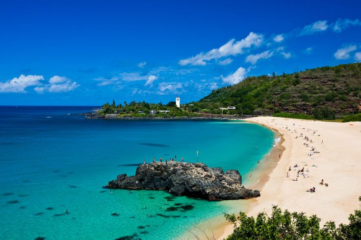

View on Google MapsSunset Beach is located on the North Shore of Oahu and is known for its big waves and beautiful sunsets. It's a popular spot for surfing and watching the sunset.
More Information
View on Google MapsPipeline is located on the North Shore of Oahu and is known for its powerful waves and challenging surf conditions. It's a popular spot for competitive surfing.
More Information
View on Google MapsWaimea Bay is located on the North Shore of Oahu and is known for its pristine sands and clear waters. It's a popular spot for swimming and sunbathing.
More Information